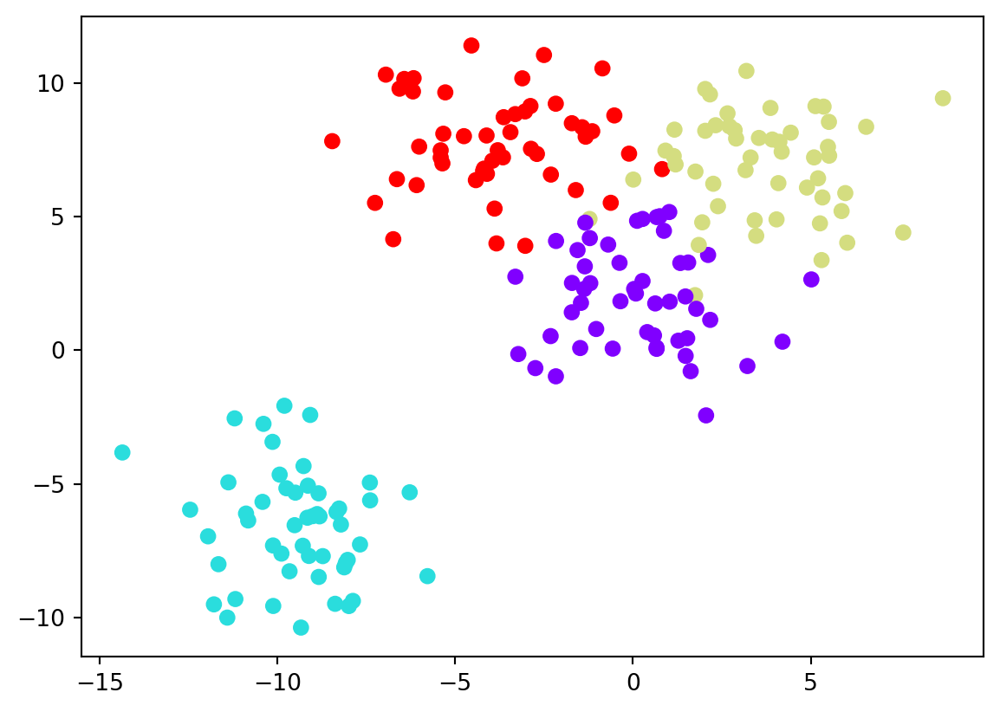
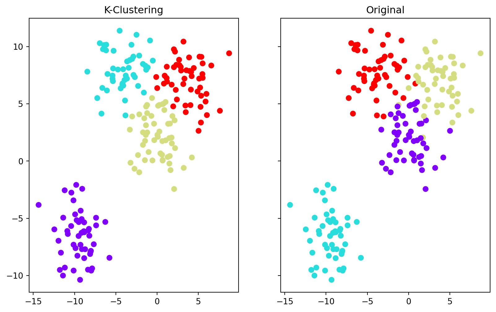

Code
import seaborn as sns
import matplotlib.pyplot as plt
%matplotlib inline
from sklearn.datasets import make_blobs
data = make_blobs(n_samples = 200, n_features = 2, centers=4, cluster_std=1.8, random_state=101)Akash Mittal
November 15, 2023
Clustering is a type of unsupervised machine learning technique where the goal is to group similar data points together. The goal of clustering is to identify underlying patterns in a dataset without known labels.
Clustering algorithms uses a similarity metric to measure likeness of data points. Common metrics include Euclidean distance, cosine similarity, or other distance measures. A clustering model’s is evaluated using metrics like silhouette score or Davies-Bouldin index. However, since clustering is unsupervised, evaluation can be subjective and depends on the context of the problem.
Clustering finds applications in various domains, including customer segmentation, anomaly detection, document clustering, image segmentation, and more. It helps discover hidden patterns and structures in data.
Hierarchical Clustering: Nested clusters that reflect similarity between other clusters. There are two types of Hierarchical Clustering:
Agglomerative / Bottom-Up Clustering, in which we recursively merge similar clusters
Divisive / Top-Down Clustering, in which we recursively sub-divide into dissimilar sub clusters
K-Clustering: In k-clustering we need to specify the number of clusters we want the data to be grouped into. The algorithm randomly assigns each observation to a cluster and finds the centroid of each cluster. This algorithms iterates through two steps repeatedly until cluster variation cannot be reduced any further.
For the sake of demonstration I will make our own data in order to show clustering.
Creating Data
Visulaize the Data
<matplotlib.collections.PathCollection at 0x161bda580>
Creating Clusters
/Users/akashmittal/Desktop/akashm/VT/Fall 2023/CS 5805/Project/.venv/lib/python3.9/site-packages/sklearn/cluster/_kmeans.py:1416: FutureWarning: The default value of `n_init` will change from 10 to 'auto' in 1.4. Set the value of `n_init` explicitly to suppress the warning
super()._check_params_vs_input(X, default_n_init=10)array([1, 3, 2, 3, 3, 0, 3, 2, 3, 2, 1, 2, 3, 3, 1, 2, 3, 2, 0, 1, 0, 2,
2, 0, 1, 0, 0, 2, 3, 3, 1, 0, 3, 2, 2, 1, 0, 0, 0, 2, 0, 1, 1, 1,
2, 3, 1, 2, 0, 2, 2, 1, 3, 2, 0, 1, 2, 2, 1, 3, 0, 3, 0, 1, 3, 2,
0, 3, 3, 0, 3, 2, 0, 2, 0, 3, 3, 2, 1, 2, 2, 0, 3, 0, 2, 2, 2, 1,
2, 0, 0, 0, 0, 2, 2, 0, 3, 1, 0, 3, 2, 0, 2, 2, 3, 2, 0, 3, 0, 0,
3, 1, 1, 3, 0, 3, 1, 1, 3, 1, 2, 1, 2, 1, 2, 3, 1, 2, 0, 1, 1, 1,
2, 0, 0, 1, 3, 1, 3, 2, 0, 3, 0, 1, 1, 3, 2, 0, 1, 1, 1, 1, 2, 3,
2, 1, 3, 3, 3, 2, 3, 2, 2, 1, 0, 1, 2, 3, 1, 2, 3, 2, 1, 3, 2, 1,
3, 3, 0, 3, 1, 0, 0, 1, 0, 0, 0, 0, 0, 2, 0, 3, 3, 1, 0, 2, 3, 3,
0, 2], dtype=int32)<matplotlib.collections.PathCollection at 0x16509cc70>